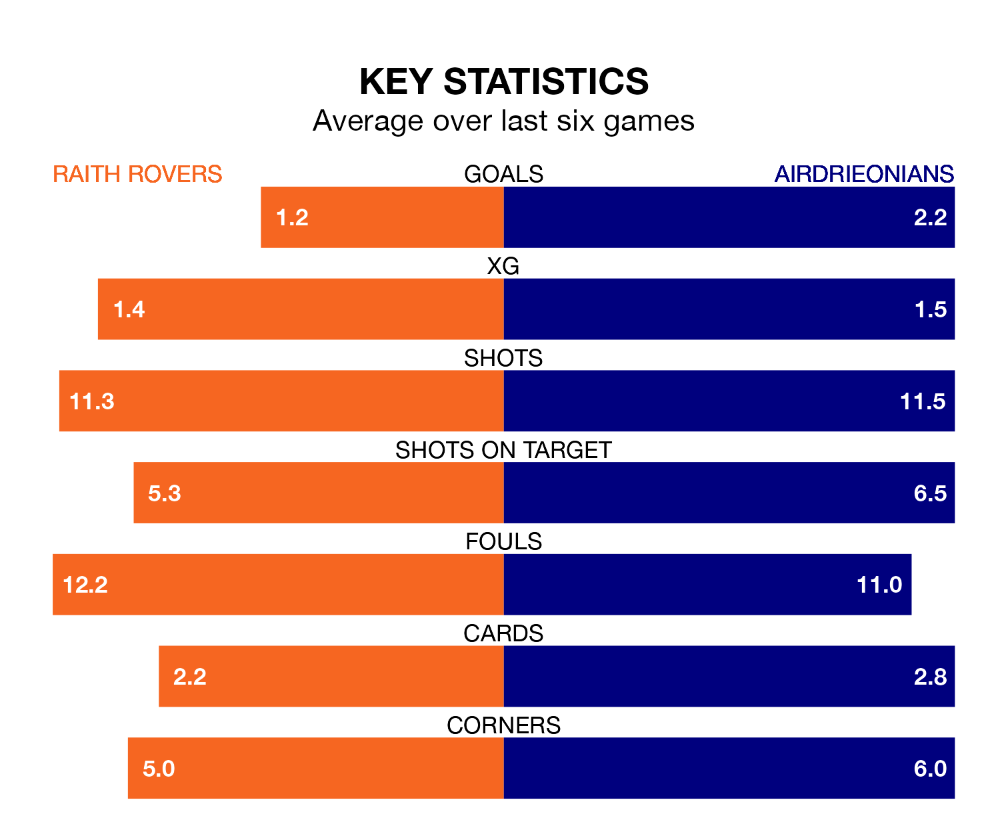

Two of the Championship's top sides face each other at Stark's Park in Tuesday's late kick-off, when second-placed Raith Rovers host fourth-placed Airdrieonians.
Raith have picked up 18 wins and seven draws from 31 games so far this season, and sit 16 points above the visitors going into the 7.45pm match.
Airdrieonians, meanwhile, have won 13 and drawn six, picking up 45 points.
With 51 goals in 31 games so far this season, Raith are the league's third-highest scorers with 1.6 goals per game. And they are conceding fewer than average, letting in 39 goals at a rate of 1.3 per game.
Airdrieonians, meanwhile, are below average scorers, with 1.3 goals per game, compared to a league average of 1.4. They have conceded 1.2 goals per game.
In Joshua Rae, the visitors can rely on one of the league's safest pair of hands. He has kept nine clean sheets in his 26 appearances this season, and only one other 'keeper – Dundee United's Jack Walton – has been able to prevent the opposition scoring on more occasions in the Championship.
In Rovers' net, Maciej Dabrowski has eight clean sheets in 29 games. He has conceded a goal every 73 minutes, 20% more often than the 89 minutes between goals for Rae.
In the last 10 years, Raith and Airdrieonians have played each other on 15 occasions. Raith won nine of them, Airdrieonians three, and they drew three times.
On average, Raith scored 1.3 goals and Airdrieonians 0.8 in those matches.
Their last meeting was on February 2, when Airdrieonians won 1-0 away.
The home side are in mixed form in the Championship, with three wins and a draw from their last six games.
With four wins and a draw over that period, Airdrieonians's form is better – they have taken 13 points from 18, compared to Raith's 10.
Raith's last match was on Saturday, a 2-1 win against Ayr United, with Dylan Easton and Jack Hamilton getting the goals for Raith.
Airdrieonians beat Greenock Morton 3-1 last time out, also on Saturday, with Charles Telfer, Mason Hancock and Nikolay Todorov on the scoresheet.
Tuesday's match will be refereed by Lloyd Wilson, who has taken charge of five Championship games so far this season, issuing one red card and booking 29 players. He has not awarded any penalties.
The last Raith game Wilson refereed was a 1-0 away loss to Airdrieonians on September 23. His last Airdrieonians match was their 1-1 draw at home against Partick Thistle on January 27.
Updated: 11:20 (UTC), 09/04/24